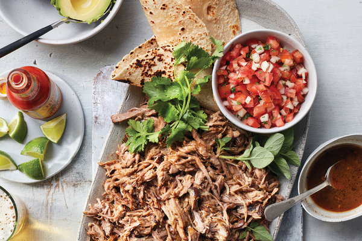

Pressure Cooker Garlicky Cuban Pork

Return home
Yield: 8-10 servings
Time: 2 1/2 hours plus 1 hour marinating
Description
There is some pork. You put it in a pot. Then you take it out of the pot and put it inside yourself.
Ingredients
- One 4-5 lbs boneless pork shoulder, cut into 4 pieces
- 12-15 garlic cloves
- Juice of 1 grapefruit (approx 2/3 cups)
- 3 tbs EVOO
- 2 tbs light brown sugar
- 1 tbs fresh oregano leaves (or 1/2 tbs dried)
- 2 tsp ground cumin
- 1 1/2 tbs kosher salt plus more if you feel like it
- 1 bay leaf
- Cilantro, chopped for serving
- Lime wedges, for serving
- Hot sauce, for serving
- Tortillas if you feel you need the crutch of a wrapper
- Salsa (pico de gallo, verde, etc.)
Preparation
- In a blender or small food processor, combine the garlic, grapefruit juice, lime zest and juice, 2 tbs EVOO, brown sugar, oregano, cumin, and salt
- Process until blended, then transfer to a large bowl and add the pork and bay leaf
- Toss to combine, then allow to marinate, covered, for at least one hour
- Take a break! Read a book! Say "hi" to your wife! Tell your cat it is special (even though it isn't)
- Heat the rest of the EVOO using the pressure cooker's saute function on medium
- Remove the pork from the marinade, reserving the marinade. Cook the pork in batches until it is browned on all sides (approx. 12 minutes total), deglazing
as needed
- When all pork is browned, return it to the pot along with the reserved marinade and bay leaf
- Cover and cook on high pressure for 80 minutes and let the pressure release naturally
- Take another break! Apologize to your cat for inflating its ego and consequently leaving it unprepared for the sharp edges of adulthood
- Remove the pork and the bay leaf, then reduce the jus by boiling it for 10-15 minutes using the saute function
- Shred the pork, then toss with the jus
- Eat it in the manner which brings you the most joy